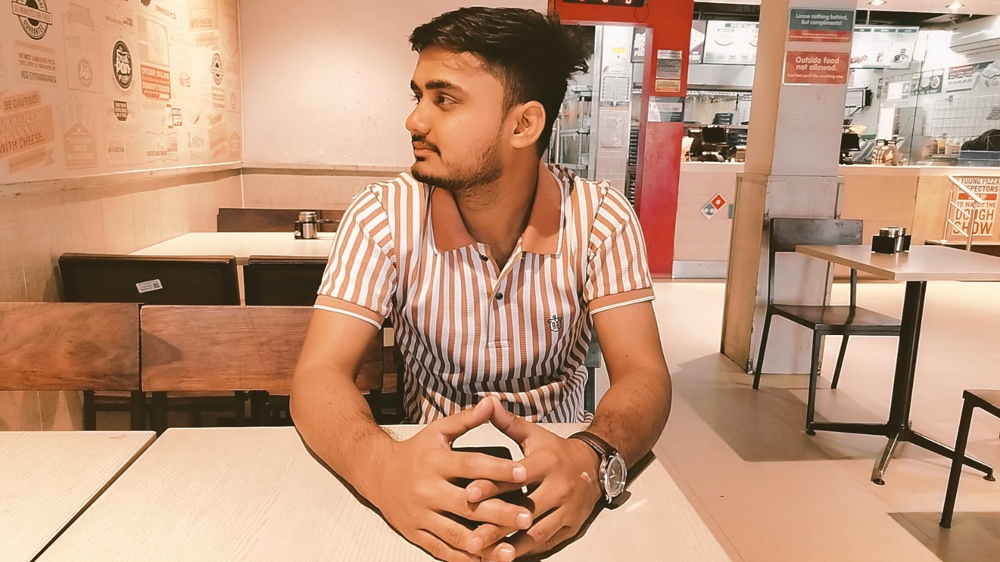

01 / 04FULL-STACK · CYBERSECURITY
▦
GRC Risk Assessment Dashboard
Risk assessment dashboard with likelihood × impact scoring, heatmap visualization and CSV export.
HELLO, I'M
Computer Science undergraduate focused on full-stack development, backend engineering, and cybersecurity. I turn ideas into practical applications and keep learning by building.

I’m a developer who enjoys working across the stack — from clean interfaces to the systems behind them.
I'm pursuing a B.Tech in Computer Science and Engineering (Cyber Security) at Lamrin Tech Skills University. My interests sit at the intersection of software engineering and application security.
I enjoy learning by shipping projects, exploring backend architecture, and strengthening my fundamentals through Java and data-structures-and-algorithms practice.
A few practical projects where I’ve applied what I’m learning.
Risk assessment dashboard with likelihood × impact scoring, heatmap visualization and CSV export.
Airbnb-style listings application with location-aware discovery and map integration.
Backend project covering authentication and video, playlist, comment, like and subscription workflows.
A responsive portfolio built with semantic HTML, custom CSS and vanilla JavaScript to present my work and technical journey.
Cyber Security · Lamrin Tech Skills University, Punjab
CGPA: 8.52 / 10CODSOFT · Completed internship program
Secured 1st position in the Skill / Cultural / Exhibition ER3 event.
Open my LinkedIn certifications section to view the listed credentials and their available details.
Issued June 2026
View on LinkedIn ↗Issued November 2024
View on LinkedIn ↗August 2024
View on LinkedIn ↗Credential details on LinkedIn
View on LinkedIn ↗August 2024 — January 2025
View on LinkedIn ↗2025
View on LinkedIn ↗I am following the Babua DSA Patterns course and practicing the concepts in Java. My focus is to understand each pattern, learn when to apply it, solve related problems, and revise consistently.
Have a project, opportunity, or technical conversation in mind?
I'm interested in meaningful engineering work and opportunities to learn and contribute.